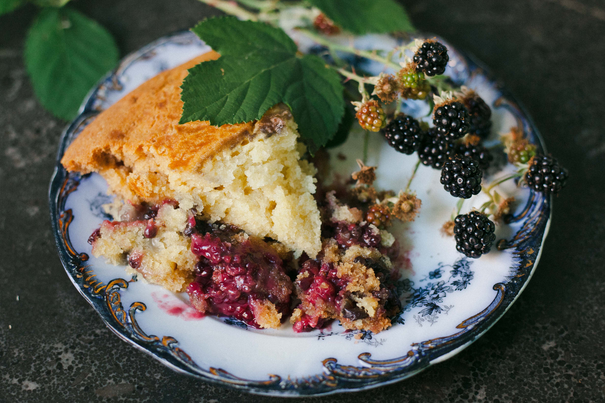

Grandmas Blackberry Cobbler
Grandmas Blackberry Cobbler

Per Serving: 453 calories; protein 4g; carbohydrates 75.6g; fat 16.3g; cholesterol 42.3mg; sodium 201mg.
This is my grandma's recipe, and I have found none that compare. I always make it with blackberries, but you can use any fruit you want.
Ingredients!
- 1 1/2 cups white sugar
- 2 tablespoons cornstarch
- 1 pinch salt
- 2 cups all-purpose-flour
- 1 1/2 cups white sugar
- teaspoonds baking powder
- 1 cup softened butter
- 1 cup milk
- 2 pounds fresh blackberries
- 2 cups boiling water
Steps!
- Preheat an oven to 350 degrees F (175 degrees C). Whisk 1 1/2 cups sugar, cornstarch, and a pinch of salt together in a small bowl; set aside.
- In a separate bowl, whisk the flour with 1 1/2 cups sugar, baking powder, and another pinch of salt. Mix in the softened butter until the mixture resembles cornmeal, then stir in the milk until moistened. Spread the blackberries into a 9x13-inch baking dish, and spoon the batter evenly over top. Sprinkle with the cornstarch mixture, then pour the boiling water over top.
- Bake in the preheated oven until the mixture is bubbly, and the topping is golden brown, 40 to 45 minutes.